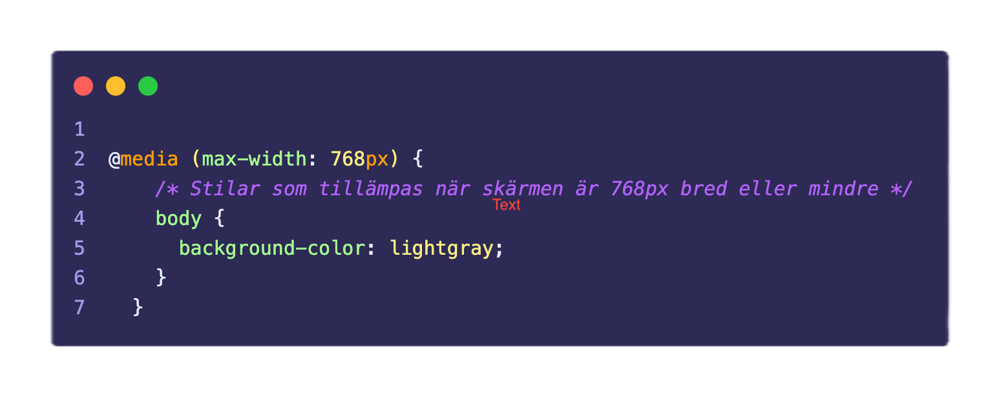

Förklara vad CSS-egenskaperna justify-content respektive align-items har för effekt när man använder flexbox för layout.
Justify-content används för att justera objektet längs x-axeln och några av dom vanligaste användningsområderna är 'center', 'space-between, och 'space-around'.
Align-items används för att justera objektet längs y-axeln och används oftast med hjälp ut av 'center', 'flex-start', och 'flex-end'.
Vad är en media query och vad används den till?
En media query används för att skapa en anpassningsbar design som gör så att hemsidan är funktionel på både datorer och mobiler. Se bilden som visar hur man använder media query.
